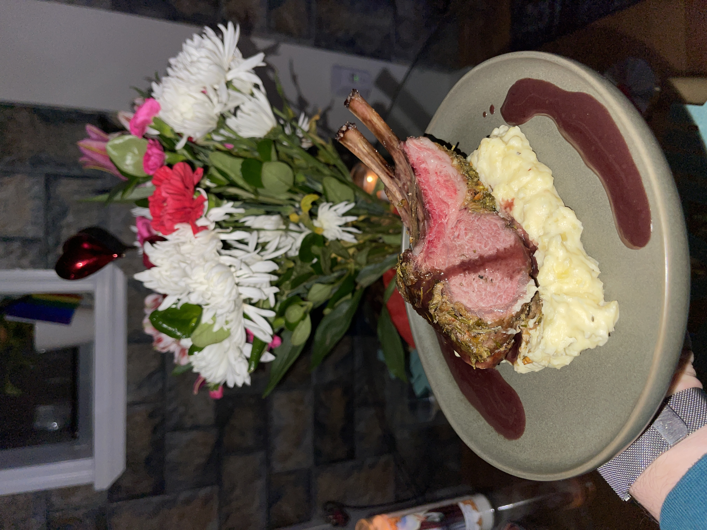

Home
Tiktok Lamb Chops w/ confit garlic mashed potato & bordelaise sauce

Yes, the title is right. I created this delightful dish of lamb chops for my guinea pig (my girlfriend) based off a TikTok that I saw. I will say, because of this the recipe is not very good and kind of hard to follow but hey, that picture you see up there is of my personal creation, so if I could follow it so could you.
Ingredients:
They actually don't really list the ingredients so I had to go of the method, which is below.
Method:
- Get yourself a nice rack of lamb and score the fat cap diagonally, then season with sea salt + black pepp and leave in fridge to dry brine for at least 3h
- Herb crust: to a food processor, add in couple handfuls of rosemary, thyme, basil, chives, mint, pistachios, then grate in 2 cloves garlic + handful of panko, 30g parmigiano & plenty of EV olive oil - blitz till crumbly. I didn't have a food processor so I had to literally just cut as much as I could.
- Remove lamb from fridge and pat dry, then lace a med-high pan with ghee and place lamb in fat side down
- Press down firmly and sear for 2.5 mins before flipping, then flip and add in unsalted butter, rosemary, thyme & crushed garlic - baste continuously for 2 mins and sear the sides till golden
- Remove lamb, pour over the fat, then brush generously with Dijon mustard
- Roll the lamb in the herb crust so that it adheres to mustard and then place into 180c oven till internal of the chops register 130f
- Remove from oven and let rest for as long as it cooks in oven!
- Lamb jus - butter in pan on med heat, sweat diced shallots ~2 mins then add in herbs and 250ml red wine
- Reduce the wine then add in your beef or lamb stock and simmer on med heat till it thickens ~20 mins. Finish this by whisking in some cold unsalted butter and seasoning to taste
- Potatoes - boil till tender, then mash with butter and an infused cream made by simmering heavy cream with confit garlic and herbs for 10 mins
- Carve and serve as an interlocked rack or into chops and enjoy!
Notes:
Yeah, I know not very descriptive but hey, you can make it work. Here is the link to the tiktok so I don't lose it